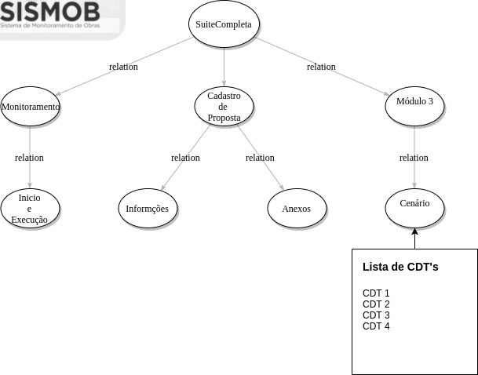

Abaixo você vê o modelo de como funciona a generalização(Herança e composição) do pacote TestBoard

A Classe SuiteCompleta.java engloba no seu contexto, a centralização de todos os módulos que serão testados.
No exemplo abaixo de código da classe, temos que a anotação @SuiteClasses recebe uma Lista de todos os possíveis módulos serão inseridos.
/**
*
* @desc Suite completa de testes automatizados funcionais para o sistema Sismob 2.*
*
*/
//@formatter:off
@RunWith(Suite.class)
@WebDriver(DriverManager.class)
@GroupSemantic(key = "build", value = VersionInfo.buildDefault)
// Onde a lista de possíveis módulos será inserida
@SuiteClasses({
CadastroDePropostaSuite.class,
CancelamentoSuite.class,
MonitoramentoSuite.class
})
public class SuiteCompleta {
}
Esse conjunto tem por sua classe a nomenclatura que engloba seu módulo, o mesmo obtido na documentação, hoje ela é oriúnda de uma parte do E-SUS, portanto cada módulo tem sua comum nomenclatura definida dessa forma: ‘MóduloEmQuestãoSuite.java’
A classe recebe uma anotação @Artefato com o atributo Enumerador de MODULO para …
e na anotação @SuiteClasses vão ser inseridas as anotações de todos os grupos de Cenários(Pacotes dos módulos) que foram listados na planilha de Casos de Teste.
Exemplo: CadastroDePropostaSuite.java
@RunWith(SuiteTestRunner.class)
// Identificação da parâmetro como MODULO pelo testrunner
@Artefato(ArtefatoEnum.MODULO)
// Lista de Grupos de cenários que envolvem o módulo Cadastro de Proposta
@SuiteClasses({
AbrangenciaSuite.class,
AmbientesExistentesSuite.class,
AmbientesSituacaoFinalSuite.class,
AmbientesSuite.class,
AnexosSuite.class,
AreaTotalSuite.class })
public class CadastroDePropostaSuite {
}
Esse conjunto tem um pacote com o nome do Módulo, onde todas as classes que estão contidas são os Grupos de Cenários de Cada Módulo. Dentro dos Grupos de Cenários estão contidas uma lista de com todos os CDT’s referentes aquele grupo de Cenários.
Veja abaixo um exemplo:
@RunWith(SuiteTestRunner.class)
// Identificação da parâmetro como CENARIO pelo testrunner, onde Ele Validará como Grupo de Cenário
@Artefato(ArtefatoEnum.CENARIO)
// Lista de Casos de Testes(CDT's) que envolvem o grupo de cenário Anexos do Modulo Cadastro de Proposta
@SuiteClasses({
CDT_Verificar_Checkbox_Declaracao_Comprovacao_Posse.class,
CDT_Verificar_Numero_Min_Fotografias.class,
CDT_Verificar_Obrigatoriedade_Checkbox.class,
CDT_Verificar_Reforma_Nao_Existem_Docs.class,
CDT_Verificar_Todos_Campos_Anexos.class,
CDT_Verificar_Um_Documento_Obrigatorio_Declaracao.class })
public class AnexosSuite {
}